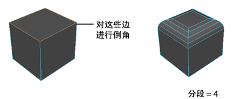
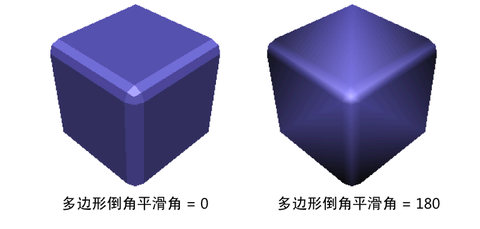
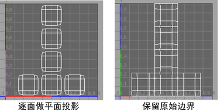
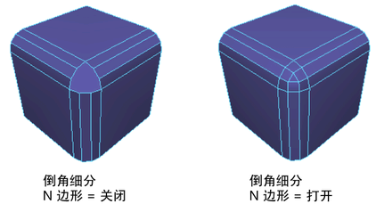
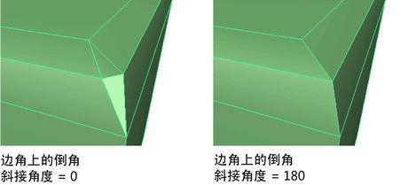
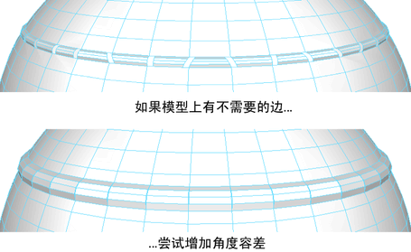

多边形倒角历史(Poly Bevel History)
通过使用“通道盒”(Channel Box)或“属性编辑器”(Attribute Editor)编辑“polyBevel”节点上的下列属性，可以对倒角进行其他修改。
-
作为分数偏移(Offset As Fraction)
- 选中时，倒角宽度将不会大于最短边。该选项会限制倒角的大小，以确保不会创建由内到外的倒角。
-
世界空间(World Space)
- 当倒角已应用于缩放对象且“世界空间”(World Space)处于启用状态时，偏移将忽略缩放并使用世界空间值。
-
偏移(Offset)
- 指定倒角的大小：原始边与偏移面中心之间的距离。“偏移”(Offset)值范围限制在 0 和 5 之间。默认值为 0.20。仅当“世界空间”(World Space)处于启用状态时，“偏移”(Offset)才可用。
-
分数(Fraction)
-
指定倒角的大小：原始边与偏移面中心之间的距离。“分数”(Fraction)值范围限制在 0 和 1 之间。默认值为 0.50。仅当“作为分数偏移”(Offset As Fraction)处于启用状态时，“分数”(Fraction)才可用。
注： 如果使用“分数”(Fraction)属性，则在场景中更改工作单位时，倒角结果不受影响。
-
分段(Segments)
-
“分段”(Segments)值确定沿倒角多边形的边创建的分段数量。使用滑块或输入值可更改分段的数量。默认值为 1。

-
输出平滑角度(Output Smoothing Angle)
-
使用该选项可以指定进行着色时希望倒角边是硬边还是软边。
注： 在先前版本的 Maya（2025 版之前）中，“输出平滑角度”(Output Smoothing Angle)被称为“平滑角度”(Smoothing Angle)。
如果希望倒角边是软边，请将“输出平滑角度”(Output Smoothing Angle)设置为较大的值 (180)。如果希望倒角边是硬边，请将“输出平滑角度”(Output Smoothing Angle)设置为较小的值 (0)。

通常，如果两个共享边之间的角度大于“平滑角度”(Smoothing Angle)属性指定的值，则倒角边将着色为硬边。默认的“输出平滑角度”(Output Smoothing Angle)值为 30 度。
-
自动适配(Auto Fit)
- 启用该选项后，Maya 会自动确定倒角与对象的适应程度。
-
圆度(Roundness)
-
默认情况下，Maya 会根据对象的几何体自动调整倒角的圆度。如果选择“自动适配倒角到对象”(Automatically fit bevel to object)，则此选项将暗显。如果未选择“自动适配倒角到对象”(Automatically fit bevel to object)，请使用“圆度”(Roundness)滑块或输入值来圆化倒角边。可以将“圆度”(Roundness)设置为负数来创建向内的倒角。
-
逐面做平面投影(Planar project per face)
-
会使用平面投影来投影每个原始面，以生成合并从倒角产生的新面的 UV。作为一个结果，可能会修改原始 UV 坐标的边界。
-
保持原始边界(Preserve original boundaries)
-
系统会将 UV 合并到 UV 贴图中，该 UV 贴图会保持在倒角之前存在的 UV 边界。为获得最佳结果，请使用偶数值作为“分段”(Segments)的数量。

多边形倒角过滤器(Poly Bevel Filter)
注： 布尔节点支持所有倒角过滤器。
- 选定边(Selected Edges)
- 启用此选项后，倒角操作仅应用于选定边。禁用此选项后，倒角操作将应用于对象中的所有边。
- 当您对对象属性（如多边形基本体的多边形历史属性）进行任何更改时，倒角边会动态更新。
- 硬边(Hard Edges)
- 启用此选项后，对象上的显式硬边（使用“网格显示 > 硬化边”(Mesh Display > Harden Edges)定义的硬边）将被倒角。
- 若要将此过滤器应用于对象的特定区域，必须启用“选定边”(Selected Edges)，并且必须选择一组边。
- 禁用“选定边”(Selected Edges)（当“硬边”(Hard Edges)仍处于启用状态时）会将此过滤器应用于整个对象，对任何标记为硬边的边进行倒角。
-
注： 在调整对象的属性时，倒角边会动态更新。例如，当您对以下节点中的任何“多边形立方体历史”(Poly Cube History)属性进行更改时，立方体上现有的倒角边会更新：
节点
- 按角度保留边(Edges By Angle)
- 启用此选项后，将基于指定的“过滤角度”(Filter Angle)容差对边进行倒角。如果相邻面之间的角度超过指定的“过滤角度”(Filter Angle)，将对面之间的边进行倒角。
- 若要将此过滤器应用于对象的特定区域，必须启用“选定边”(Selected Edges)，并且必须选择一组边。
- 禁用“选定边”(Selected Edges)（当“按角度保留边”(Edges by Angle)仍处于启用状态时）会将此过滤器应用于整个对象，对超过容差值的边进行倒角。
-
注： 在调整对象的属性时，倒角边会动态更新。例如，当您对以下节点中的任何“多边形立方体历史”(Poly Cube History)属性进行更改时，立方体上现有的倒角边会更新：
节点
- 过滤角度(Filter Angle)
- 用于为“按角度保留边”(Edges By Angle)选项设置“过滤角度”(Filter Angle)容差。仅当“按角度保留边”(Edges By Angle)处于启用状态时，此选项才可用。
清理(Cleanup)
-
细分 N 边形(Subdivide Ngons)
-
作为使用多个分段执行倒角操作的结果，细分包含大量边的任何面。默认情况下，“细分 N 边形”(Subdivide Ngons)选项处于启用状态，也可以在“通道盒”(Channel Box)中进行控制。

-
斜接角度(Mitering angle)
-
涉及某个相交的非倒角边时，控制如何将两个相交的倒角边接合到一起。可以根据需要设置“斜接角度”(Mitering Angle)值，指定是否要斜接最近倒角的边。

如果两个倒角边之间的角度大于指定的斜接角度，那么倒角边将不会进行斜接。默认情况下，“斜接角度”(Mitering Angle)功能处于启用状态，并设置为 180 度。
-
角度容差(Angle tolerance)
-
倒角使用该角度来决定它是否需要插入附加边。如果模型仍包含不需要的边，请尝试增大该值以将这些边移除。

-
合并顶点(Merge Vertices)
-
用于在倒角边时自动合并顶点，而无需单独使用“合并顶点”(Merge Vertices)功能。重合边及其关联的 UV 也会自动进行合并（在指定阈值内）。默认情况下，“合并顶点”(Merge Vertices)属性处于启用状态，也可以在“通道盒”(Channel Box)中进行编辑。
-
合并容差(Merge Tolerance)
- 启用“合并顶点”(Merge Vertices)后，“合并容差”(Merge Tolerance)值会指定顶点必须相距多近才能合并。